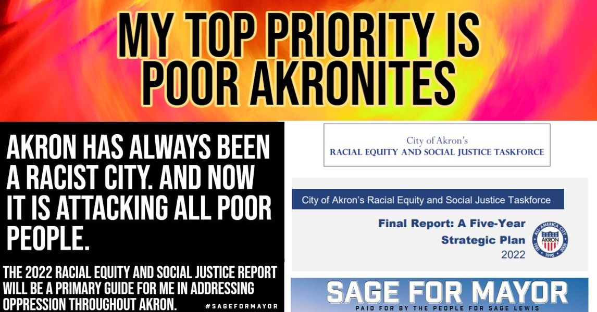

Timeline photos
As a person who stands up for the marginalized and oppressed people of Akron I can assure you that the hate for Black people, disabled people, addicted people, elderly people, and homeless people is alive and well.
I'm getting texts right now about how my "utopia for the dregs of society will never happen here." (Last night a tent was burned to the ground at the the Houseless Movement Garden. That only happens out of hate.)
If we want to ever have any hope of a bright future as a city THE ONLY WAY IT WILL EVER HAPPEN is caring for the "dregs" of society.
#sageformayor